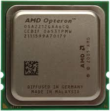

Opteron is the former server and workstation processor line of AMD's x86 and was the first processor to support the AMD64 instruction set architecture . It was released on April 22, 2003, and was designed to compete in the server and workstation markets, particularly in the same segment as the Intel Xeon processor.
Source: "https://en.wikipedia.org/wiki/Opteron"